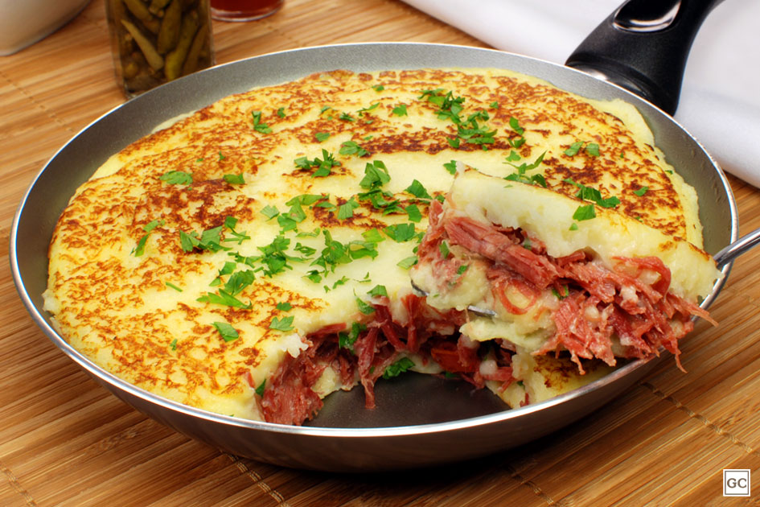

Escondidinho de Frigideira

Um pouco de contexto
Esta é outra receita prática que pode ser oferecida sozinha ou com acompanhamentos. Fácil de fazer e muito gostoso, o "escondidinho" também é oferecido como um petisco em botecos e barzinhos.
Esta receita rende 4 porções e é ideal para uma refeição para dois.
Ingredientes
- 500g de carne moída
- 1 cebola pequena, picada
- azeite para refogar
- 2 cubos de caldo de carne
- 250g de presunto fatiado
- 250g de muzzarela fatiada
- 2 dentes de alho amassados
- orégano, salsa e cebolinha a gosto
- 1 lata de extrato de tomate (340g)
- 1 pacote (200g) de lasanha pré-cozida
- queijo ralado para polvilhar
Passo a Passo
- Refogue a cebola e o alho no azeite
- Acrescente a carne moída, 1 xícara de água, e deixe até cozinhar
- Junte o extrato de tomate, orégano e 1,5l de água
- Cozinha por mais 10 a 15 minutos, junte a salsinha e a cebolinha. O molho deve ter consistência bem líquida
- Forre uma forma (refratária) com um pouco do molho
- Preencha com camadas alternadas de massa de lasagna, molho, fatias de presunto e fatias de muzzarela
- Forre a camada superior com muzzarela e polvilhe queijo ralado sobre ela
- Leve ao forno até gratinar